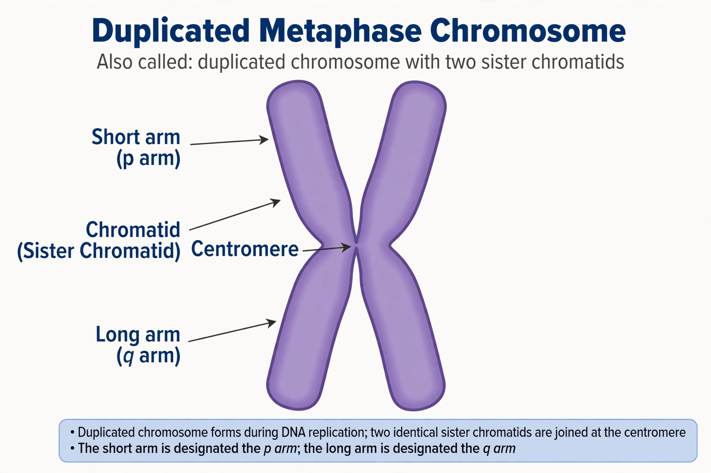

 |
A chromosome is a package of DNA containing part or all of the genetic material of an organism. In most chromosomes the very long thin DNA fibers are coated with nucleosomes and other proteins, forming chromatin, which allows the DNA to be tightly packed and regulated. Chromosomes are normally visible under a light microscope only during the metaphase of cell division, when they are highly condensed. The word chromosome comes from the Greek χρῶμα (chroma, "colour") and σῶμα (soma, "body"), referring to their strong staining by particular dyes.
Prokaryotes such as bacteria typically have a single circular chromosome located in the nucleoid region of the cell, often accompanied by small extrachromosomal plasmids. Eukaryotes have multiple linear chromosomes contained within the nucleus, plus additional DNA in mitochondria and chloroplasts. Each eukaryotic chromosome consists of a single linear DNA molecule associated with histone proteins; the complex of DNA and protein is called chromatin, which exists as loosely packed euchromatin and densely packed heterochromatin.
After DNA replication, each chromosome consists of two identical sister chromatids joined at a constricted region called the centromere, which divides the chromosome into a short (p) arm and a long (q) arm. The ends of linear chromosomes are capped by repetitive sequences called telomeres, which protect the chromosome from deterioration and from fusion with neighbouring chromosomes. The centromere is the attachment site for the kinetochore and spindle fibres during mitosis and meiosis, ensuring accurate segregation of chromatids to daughter cells.
Chromosome number is characteristic of a species but varies enormously among organisms. Humans have 46 chromosomes in somatic cells: 22 pairs of autosomes and one pair of sex chromosomes (XX in females, XY in males). A display of an organism's chromosomes, arranged in pairs by size and shape, is called a karyotype. Gametes (sperm and egg cells) are haploid, carrying a single set of 23 chromosomes in humans, while somatic cells are diploid. Errors in chromosome number (aneuploidy), such as trisomy 21, cause Down syndrome; structural abnormalities include deletions, duplications, inversions, and translocations.
Chromosomes were described in the 19th century by scientists including Karl Wilhelm von Nägeli, Édouard Van Beneden, and Walther Flemming, who documented mitosis. The word "chromosome" was coined by Heinrich Wilhelm Waldeyer in 1888. In the early 1900s, Theodor Boveri and Walter Sutton independently proposed the chromosome theory of inheritance — that chromosomes carry the hereditary material — which Thomas Hunt Morgan's work on fruit flies confirmed. The identification of DNA as the hereditary substance, and the determination of the correct human chromosome number (46) by Tjio and Levan in 1956, were further landmarks.
This article is a recreation from memory in the style of Wikipedia.